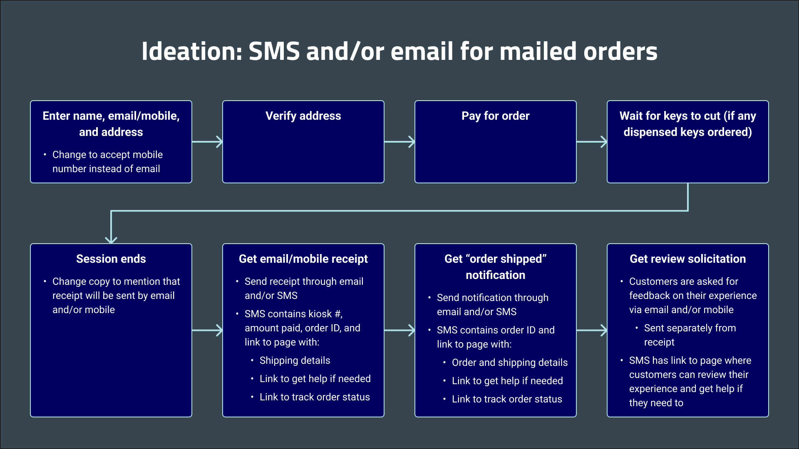
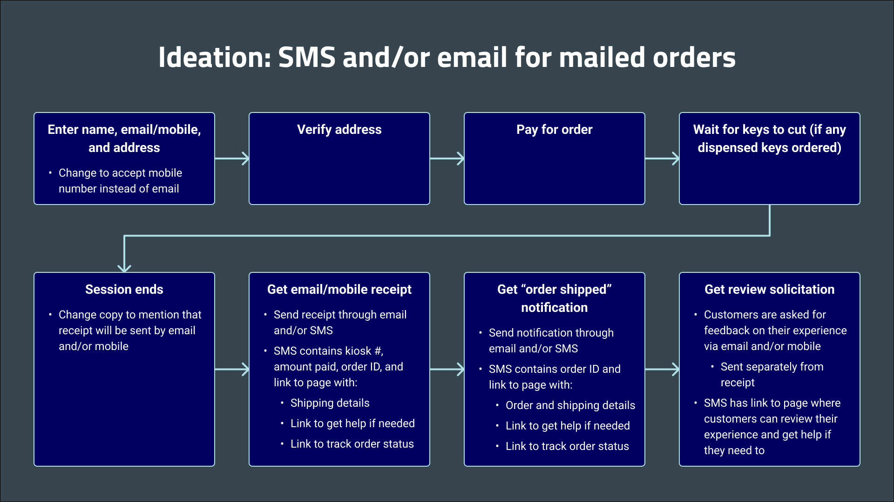

SMS Review Solicitation
A kiosk-to-web experience that allows kiosk customers to easily receive a receipt of their order, then leave a review or get help.
KeyMe Locksmiths

Overview
Note: Some content cannot be displayed due to the NDA.
One of the main motivators for copying a key at a KeyMe kiosk is social proof - aka ratings and reviews. The more ratings a given kiosk has, the more credible it seems. However, while every kiosk has customers, not all of them leave reviews on their experiences. Therefore, kiosks with fewer reviews seem less trustworthy, and new customers are reluctant to try them out. We needed to encourage more reviews to draw more customers.
At the time, we solicited reviews via email. After a customer's order was fulfilled, the customer received an email asking about their experience. They were then directed to the Google Business Profile (GBP) page for the kiosk and asked to leave a review. This method was ineffective because:
- Not every customer reads every email.
- The customer's email client may have thought the review solicitation was a marketing email and moved it to spam.
- The experience might not have been fresh in the customer's mind by the time they saw the solicitation.
Our solution was a new feature - SMS receipts. Instead of receiving the traditional email receipt and review solicitation email, customers receive an SMS (text message) containing both a receipt and review solicitation. The SMS asks the customer to let us know about their experience and includes a link to a "landing page" on our website. That page encourages the customer to leave a review and/or contact our CX team to resolve any issues they may have had.
We hypothesized that switching to SMS receipts and review solicitations would be more successful because:
- Customers are more likely to see the SMS than an email.
- The SMS encouraged a review while the experience was still fresh in the customer's memory.
- The solicitation was in the same view as the receipt details, so it was obvious which order the solicitation applied to.
- The SMS made it easier to get help (if needed) and then leave a review since both actions were on the same page.
Due to the complexity of order status notifications for mailed keys (vs. keys dispensed right from the kiosk), we limited our SMS receipts feature to dispense-only orders - which also happened to be our most common type of order. Customers that placed orders including at least one mailed key still received the traditional email receipt and review solicitation. In a future iteration, the feature could be expanded to cover mailed orders too.
Don't have time to read the process? Jump to Results!
Process
Objectives

- Increase review volume for our kiosk listings on Google - especially those with few ratings - by making it easier for a customer to leave a review. We ideally want positive ratings (3 to 5 stars).
Research
User Research
We couldn't interview actual customers at the time due to security concerns and financial constraints. Instead, we asked others from the organization to provide feedback on current and proposed designs from a customer's perspective. We also chatted with the CX and analytics teams for more insights.
Because KeyMe kiosks offered both dispensed keys (dispensed immediately from the kiosk) and mailed keys (sent from our fulfillment center after a few days), we also had to consider multiple user journeys and task flows.
Design Research
Inspired by Jackson Hewitt's success story, our leadership wanted to try soliciting reviews via text. Therefore, we studied design precedents and heuristics for:
- Large displays like desktops, kiosks, or posters that text to your phone or give you QR codes to scan
- Receipts and order status notifications sent via SMS
- Review solicitation methods
Ideation
Our leadership wanted to replace email receipts and review solicitations entirely with SMS. But just from our task flow analyses, we realized that the scope would be big because:
- We would have to update multiple areas in the kiosk experience to accommodate mobile numbers.
-
We have to replicate our emails' functionality in SMS.
- In other words, customers would need the ability to get receipts, review solicitations, order status updates, and other communications via SMS (or links within the SMS). If we used SMS only, we had limited formatting options and length. If we used a combination of SMS and links, we have to design and develop the pages those links go to.
To convey this complexity, we wireframed flows for both dispensed-only and mailed orders, including additional pages we would need to develop. We also depicted alternative flows where users could input both email addresses and mobile numbers or choose between the two (but not be restricted to SMS only). Accepting both email and mobile would be more conventional and what users would expect, while allowing them to choose would support user agency for a better experience, though both options would also have a large scope.
Additionally, we noted that most e-commerce sites offer both email and mobile order status updates, so we at least needed email for our mailed orders. Receipts for mailed orders are typically sent to customers' email addresses instead of texted to them. We recommended to our leadership that we consider keeping emails in the mailed order flow at least.
 

Finally, we designed a few concepts for the review solicitation methods and layouts to test with our team.
Prototyping
We presented our ideation and recommendations to our leadership. After they understood the expansive scope, they decided to limit the SMS review solicitation test to dispensed-only orders. Customers ordering mailed items would still receive receipt and review solicitation emails.
Our leadership also preferred that the solicitation be part of the SMS receipt instead of a message on the kiosk's End Session page (which appears after an order session has finished). According to historical data, we've had low interaction with QR codes elsewhere in the kiosk, and we would also have to generate a unique QR code for each kiosk. Data also suggests that customers don't pay attention to the End Session page, but our leadership thought it couldn't hurt to include a solicitation message there in addition to the one in the receipt.
For the solicitation page design itself, they preferred designs based on the ones we were currently using in our review solicitation email tests.
With that, we created a prototype for the dispense-only flow with SMS receipts and solicitation, then tested them with our team as if they were customers. They said the flow was straightforward and made sense.
Our CX team felt that the review solicitation designs with emojis were more inviting and enticing. They helped us reduce and refine copy to be more neutral, which can help with angry customers.
Development
Development was straightforward since - after reducing the scope - the new flow was similar to the original flow. We didn't have to make any major changes along the way. After some testing and bug fixes, we deployed the feature.
Results
We first released the feature to a subset of kiosks. Within two weeks, review volume increased by 200% to 300%. We later released to all kiosks, and after another two weeks, review volume increased by 121%. However, the average rating also dropped 28%, possibly because we made it easier to leave any review - including bad ones.
Although a drop in rating wasn't ideal, we considered this feature successful because it increased review volume - our main goal and the most important SEO metric. Then, we started testing different landing page designs to see which one leads to the best balance between higher volume and higher ratings. We found that using emojis encourages reviews, and making it easier to get help with issues encourages more positive reviews.


Reflection
Since this project was simple, not much went wrong. We could have surveyed past customers anonymously to understand why they did or didn't leave a review. Then, we could have used those insights to further encourage reviews in our designs.
Next Steps
- Explore ways for the user to choose between SMS or email (or choose both) for receipts and other communications.
- Explore ways to encourage more reviews via email.
- Conduct a survey to understand why users don't leave reviews.
- Explore additional landing page designs to test (might have to observe paid users for insights).